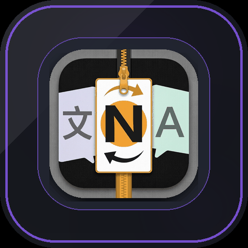

อ่านบทแปลของคุณ
เลือกไฟล์สำรอง JSON หรือซิงก์จากลิงก์ที่ส่วนขยายอัปโหลดขึ้นคลาวด์ให้ ข้อมูลจะถูกเก็บใน IndexedDB ของเบราว์เซอร์นี้

Re:NovelTH ฉบับอ่านส่วนตัวเลือกไฟล์สำรอง JSON หรือซิงก์จากลิงก์ที่ส่วนขยายอัปโหลดขึ้นคลาวด์ให้ ข้อมูลจะถูกเก็บใน IndexedDB ของเบราว์เซอร์นี้